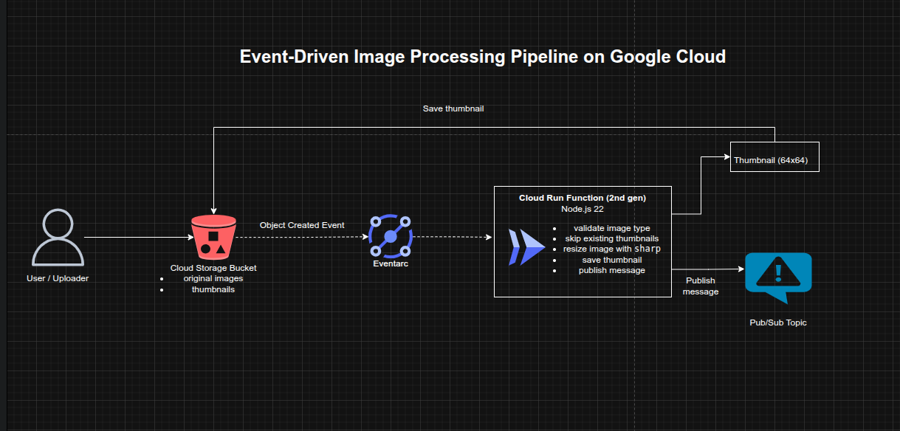

Event-Driven Image Processing Pipeline with Cloud Run Functions on Google Cloud
Event-Driven Image Processing Pipeline with Cloud Run Functions on Google Cloud
Timeline: December 2025
Role: Cloud Engineer / Serverless Developer
Skills: Cloud Storage, Cloud Run Functions (2nd Gen), Pub/Sub, Eventarc, Node.js, Image Processing, Serverless Architecture, IAM
Project Summary
This project implemented an event-driven image processing pipeline on Google Cloud. When an image is uploaded to a Cloud Storage bucket, a Cloud Run Function is automatically triggered to generate a thumbnail version of the image and store it back in the bucket. The function then publishes a message to a Pub/Sub topic, enabling further downstream processing or notification workflows.
The solution demonstrates how to design a serverless, event-driven system that reacts to data changes in real time without requiring manual intervention or persistent infrastructure.
Objectives
- Create a storage bucket for image uploads
- Trigger processing automatically when new images are added
- Generate thumbnail images programmatically
- Publish processing events to a messaging system
- Apply basic IAM governance by removing unnecessary access
Architecture Overview
The architecture consisted of:
- A Cloud Storage bucket for storing uploaded images
- A Cloud Run Function (2nd Gen) triggered on object creation events
- Image processing logic using the
sharpNode.js library - Automatic thumbnail generation (64x64)
- A Pub/Sub topic receiving messages after processing
- Event-driven communication using Eventarc
- IAM configuration ensuring only required users had access

Implementation & Highlights
1. Storage Layer
- Created a Cloud Storage bucket for image uploads
- Used object creation as the trigger event
- Ensured images are stored centrally for processing and retrieval
2. Event-Driven Processing with Cloud Run Functions
- Created a Cloud Run Function (2nd generation)
- Configured trigger:
- Cloud Storage object creation
- Used Node.js runtime
- Implemented event-driven execution without polling or manual invocation
3. Image Transformation Logic
- Used the
sharplibrary to resize images - Generated thumbnails at 64x64 resolution
- Ensured original images were preserved
- Stored processed images back into the same bucket with a new filename suffix
4. Messaging Integration with Pub/Sub
- Created a Pub/Sub topic
- Published a message after each successful thumbnail generation
- Enabled asynchronous communication for downstream workflows (e.g., notifications, indexing, analytics)
5. Event Filtering and Idempotency
- Ensured the function ignored already processed thumbnails
- Prevented infinite trigger loops by checking filename patterns
- Applied basic event filtering logic within the function
6. Security and Access Control
- Reviewed IAM users in the project
- Removed access for a previous cloud engineer
- Reinforced least-privilege access principles for shared cloud environments
Design Decisions
- Used Cloud Storage events to trigger processing instead of polling
- Used Cloud Run Functions (2nd Gen) for scalability and event integration
- Used Pub/Sub to decouple processing from downstream systems
- Used sharp for efficient in-memory image processing
- Implemented idempotency checks to prevent duplicate processing
- Kept infrastructure serverless to reduce operational overhead
Results & Impact
- Built a fully functional event-driven processing pipeline
- Eliminated need for manual image processing workflows
- Enabled real-time transformation of uploaded content
- Created a scalable architecture that can handle bursts of uploads
- Introduced asynchronous messaging for future extensibility
- Applied security best practices in IAM management
Tools & Technologies Used
- Cloud Storage – Object storage and event source
- Cloud Run Functions (2nd Gen) – Serverless compute
- Pub/Sub – Event messaging
- Eventarc – Event routing
- Node.js – Runtime environment
- sharp – Image processing library
- IAM – Access control
Outcome
This project demonstrates the ability to design and implement a serverless event-driven architecture on Google Cloud that processes data automatically in response to real-world events. It highlights practical skills in event handling, serverless compute, asynchronous messaging, and data transformation, which are highly relevant to modern cloud-native and platform engineering roles.